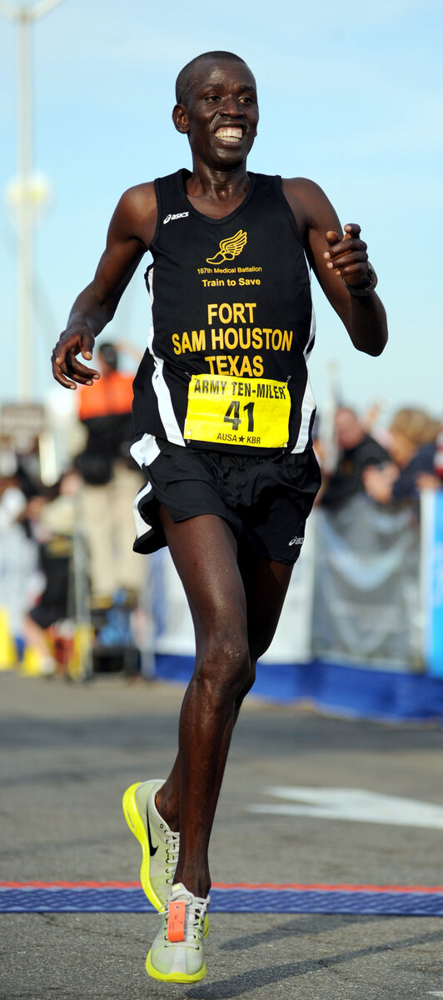

B2 · Sports
The Marathon and the Wall
At about thirty kilometers, something happens that no amount of willpower prevents.
Play the audio and follow along, then read it again on your own. Tap or hover over a highlighted word to see what it means.
Runners call it the wall, and the name is accurate. It arrives somewhere between thirty and thirty-five kilometers, and it does not feel like ordinary tiredness. The legs stop answering. The pace falls by a minute a kilometer or more, and no amount of willpower reverses it.
What is happening is simple enough to explain and very hard to avoid. The body stores carbohydrate as glycogen, in the muscles and the liver, and a trained adult holds perhaps two thousand calories of it. A marathon costs somewhere near two thousand six hundred. The arithmetic is the whole problem: at racing pace you run out before the finish.
Fat is the alternative fuel and there is plenty of it — even a lean runner carries enough for several marathons. But fat is metabolised more slowly, and it needs more oxygen for the same energy. When glycogen runs low the body switches over, and the switch is what the runner feels: the same effort now produces a slower pace. Worse, the brain depends on glucose, so the mental symptoms arrive with the physical ones. Runners describe losing the thread of simple arithmetic, misreading their own watch, and in bad cases a strange emotional flatness.
Three things postpone it. The first is pacing. Running the first half too fast burns glycogen disproportionately, because the faster you go the greater the share of energy that comes from carbohydrate rather than fat. Most people who hit the wall at thirty kilometers caused it at ten.
The second is fuelling during the race. Taking in thirty to sixty grams of carbohydrate an hour does not replace what is being spent, but it extends the supply. The practical difficulty is that the stomach tolerates much less at racing effort than at rest, which is why fuelling has to be rehearsed in training rather than attempted for the first time on the day.
The third is the training itself. Long slow runs improve the body's ability to use fat at a given pace, which spares glycogen, and they increase how much glycogen can be stored. This adaptation takes months and is the least glamorous part of a training plan.
What does not work is willpower alone. This is the part that surprises people, because the marathon has a century of literature attached to it about mental strength, and at thirty-two kilometers with no glycogen left the mind is simply not the limiting factor. A runner can want it enormously and still slow by fifteen per cent. The useful mental skill is narrower and less romantic: recognizing the early signs, accepting the slower pace immediately rather than fighting it for two kilometers and paying for it, and continuing to take fuel when the stomach has stopped wanting any.
Elite runners hit the wall less often, and not because they suffer better. They have larger glycogen stores, use fat more efficiently, have practiced their fuelling to the gram, and — most of all — pace the first half with a discipline that looks conservative to anyone watching. The wall is not a test of character. It is a budget, and the people who avoid it are the ones who did the arithmetic beforehand.


Key Vocabulary
- pace the speed you are running or walking at
- willpower the mental strength to force yourself to continue
- carbohydrate the food group the body burns fastest for energy
- glycogen the form the body stores carbohydrate in
- liver the large organ that stores and processes what you eat
- lean with very little body fat
- to metabolise to break down for energy in the body
- to switch over to change from one thing to another
- glucose the simple sugar the brain runs on
- to lose the thread to stop being able to follow something
- flatness an absence of feeling
- to postpone to push to a later time
- disproportionately much more than the size of the cause would suggest
- to fuel to take in energy during exercise
- to tolerate to be able to accept without trouble
- to rehearse to practice in advance
- to spare to use less of something, saving it
- adaptation a lasting change the body makes in response to training
- glamorous exciting and attractive to look at
- limiting factor the one thing that decides how far you can go
- elite at the very top level
- conservative cautious; holding back
The Marathon and the Wall — B2 · Sports · Renan the Teacher, English Language Academy · https://renangrossi.github.io/englishclasses/reading/b2/the-marathon-and-the-wall.html
Interactive Exercises
Practice
Complete each exercise, then click Submit to see your score and an explanation for every answer.
Speaking & Writing
Discussion
There are no right answers here — use these to practice speaking, or write a short answer to each.
- Have you ever run out of energy during exercise? What did it feel like?
- The author says the wall is a budget, not a test of character. Do you agree?
- Where else in life do people blame willpower for an arithmetic problem?
- What would you have to rehearse in advance for something you are planning?
- Write about 250 words on a time you paced something badly at the start.